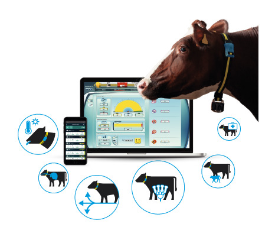
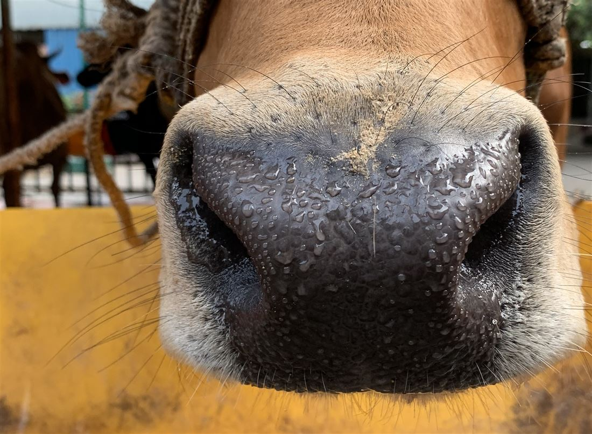
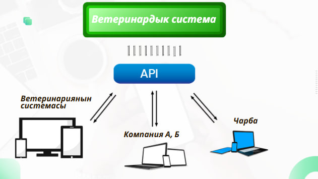
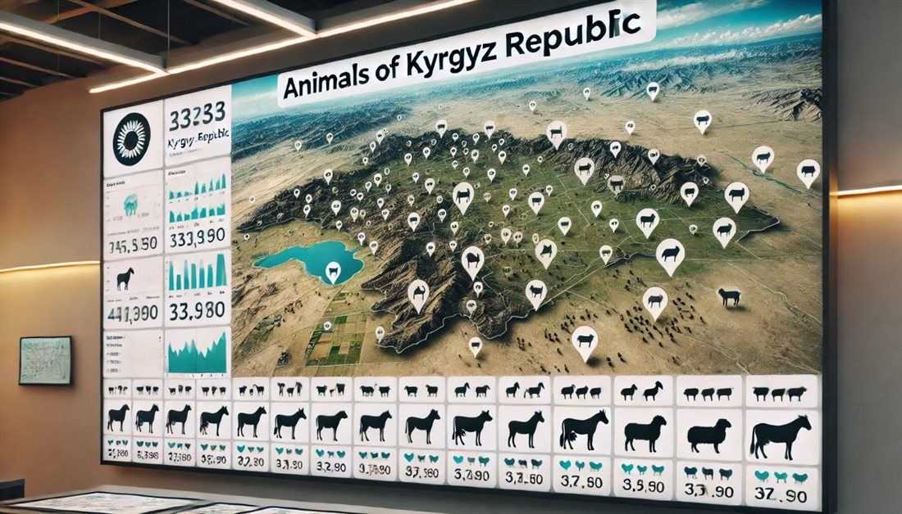

Урматтуу Садыр Нургожоевич!
Сизге Кыргыз Республикасынын айыл чарба тармагын санариптештирүүгө жана фермерлердин жашоосун жеңилдетүүгө багытталган «Чарба» санариптик экосистемасынын долбоорун кароону сунуштайм.
Бул долбоор өлкөбүздүн азык-түлүк коопсуздугун камсыздоо, мал жандыктарын так эсепке алуу жана ветеринардык көзөмөлдү заманбап деңгээлге көтөрүү максатында толугу менен ата мекендик иштеп чыгуучулар тарабынан түзүлдү.
Биз 3 жылдан ашык убакыттан бери бул багытта эмгектенип, 5000ден ашык фермерлер жана 200дөн ашык ветеринарлар менен түз жолугуп, алардын реалдуу көйгөйлөрүн изилдеп чыктык. Анын негизинде мамлекетке да, карапайым элге да пайда алып келе турган төмөнкүдөй чечимдерди иштеп чыктык:
- Реалдуу убакыттагы көзөмөл (RFID жана Face ID): Ар бир мал жандыгына электрондук биркаларды басуу жана жасалма интеллект (AI) аркылуу тумшугунан таануу (Face ID) технологиясы киргизилди. Бул урулукка каршы күрөшүүдө жана так эсепти жүргүзүүдө зор көмөк көрсөтөт.
- Бюрократияны жоюу жана санариптештирүү: Фермерлер менен ветеринарлардын ортосундагы иш кагаздарын толугу менен санарипке өткөрүп, убакытты жана каражатты үнөмдөйт.
- Мамлекеттик система менен интеграция: Платформа ветеринардык мамлекеттик системалар менен туташып, маалымат алмашууну автоматташтырууга толук даяр. Буга чейин Суу ресурстары, айыл чарба жана кайра иштетүү өнөр жайы министринин биринчи орун басарына жана санариптештирүү боюнча жалпы командага толук презентация кылынды.
- Масштабдуулук (Келечектүү пландар): Экосистеманын архитектурасы келечекте бир гана мал чарбачылыгы эмес, аарычылык, жер жана суу ресурстары, сугат системалары жана балык чарбаларын да камтууга мүмкүндүк берет.
Тилекке каршы, акыркы 2 жылдан бери мамлекеттик ветеринардык система тарабынан тийиштүү колдоо жана интеграцияга мүмкүнчүлүк ала албай келебиз. Сиздин санариптештирүү жана инновацияларды колдоо боюнча жүргүзгөн реформаларыңызга ишенип, бул долбоор өлкө башчысынын деңгээлинде колдоого татыктуу деп эсептейм.
Бул стратегиялык долбоор жеке Өзүңүздүн кийлигишүүңүзсүз ишке ашпай калуусу толук мүмкүн.
Долбоордун толук концепциясы, изилдөөлөр жана интерактивдүү демо-версиясы менен төмөнкү шилтеме аркылуу тааныша аласыз:
🔗 Шилтеме
Урматтуу Садыр Нургожоевич, бул ата мекендик инновациялык долбоорду Сизге жана Сиздин администрациянын адистерине каалаган убакта жеке өзүм кенен тааныштырып берүүгө даярмын. Өлкөбүздүн айыл чарбасын биргеликте жаңы деңгээлге чыгарабыз деп ишенебиз.
Терең урматым менен,
«Чарба» долбоорунун негиздөөчүсү жана жетекчиси: Алимбаев Данияр
Телефон номерим: +996 755 00 84 53
Электрондук дарек: daniyaralimbaev98@gmail.com
Фермер, дыйкандар үчүн эко-система
ЧАРБА
Айыл чарбасын санариптештирген, фермерлерди, мурап- касаптарды, алуучу-сатуучуларды бириктирген жана мал-жандыктын санагын жүргүзгөн, фермердин жумушун жеңилдеткен эко-система

4171 0000123456
Биздин сунуш
Фермерден министрликке чейинки көйгөйлөрдү чечкен платформа
Чарба тиркемеси - бир нече багытта иштейт: күнүмдүк эсептен баштап өлкө деңгээлиндеги көзөмөлгө чейин көмөктөшөт.
Бюрократияны жоюу
AI Чатбот
Трекинг
Акылдуу ферма — AI анализ
Ветеринарды чакыруу
Фермер менен министрликтин байланышы
Камсыздандыруу-субсидия
Кошумча функциялар
Технология · Face ID
FACE ID
Чарба FACE ID алгоритмин жасап жатат жана тиркемеде колдонот.
- ML Адамдын манжасы сыяктуу эле жандыктын мурдун сканерлейт
- ◎ Уурулуктун алдын алат
- ~ 100% ээсине таандык экенин далилдейт
- ↯ Оффлайн сканер — интернет жок жерде да иштейт

Charba тил модели
Өзүбүздүн кыргызча тил моделибиз
Мамлекеттик токтомдорду, жол-жоболорду фермерге түшүнүктүү тилде жеткирүү үчүн өзүбүздүн тил моделин машыктырабыз.
- KY Кыргызча иштейт
- RU Орусча иштейт
- → Токтомдор жана стандарттар боюнча машыктырылат
- Σ Жандыктын маалыматын анализдейт
Системалык интеграция
Мамлекеттик системага туташат

Өкмөткө эмне пайда?
Бир платформа — фермерге да, мамлекетке да пайдалуу
Чарба эко-системасы өлкөнүн айыл чарба секторун 100% санариптештирет.
01
Жалпы учет, эсеп
02
Оорулардын алдын алуу
03
Сатууларды көзөмөлдөө
04
Жайыттарды көзөмөлдөө
05
Вет кызматтар үчүн онлайн төлөм
06
Бюрократияны азайтуу
07
Кошумча функциялар
08
Мамлекеттик каражатты үнөмдөө
09
Эттин баасын көзөмөлдөө
10
Колл-центрди жеңилдетүү
Эттин баасын фермерден баштап касапка чейин көзөмөлдөп беребиз! Бул биздин стратегиялык планыбыз
Өлкө боюнча жандыктардын картасы
Ар бир жандыкты картага түшүрүп, анализдеп, бүт отчетту бир картага чыгарабыз
- Аймактык ветеринар көрө алат
- Регионалдык ветеринар көрө алат
- Ветеринардык кызмат көрө алат

Бизге эмне керек?
Платформаны ишке киргизүү үчүн зарыл кадамдар
1
Суу ресурстары, айыл чарба жана кайра иштетүү өнөр жайы министрлиги менен келишим
2
Мамлекеттик система менен интеграция
3
Аймактык ветеринардык кызматтын колдоосу
4
Идентификация боюнча токтомду өзгөртүү
5
Кой-эчки, чочколор үчүн жеке идентификация
6
Электрондук биркаларга өтүү
7
Коддордун структурасын өзгөртүү
8
Биркалар үчүн өткөрүлгөн тендерди жоюу
9
Бирка сатууну түз келишим менен бизге берүү
Кийинки кадамдар
Мал чарбачылыгынан баштап бүтүндөй айыл чарбасын санариптештирүү
Чарбанын архитектурасы башка тармактарга да кеңейе алат.
◆Аарылар
◆Жерлер
◆Эгиндер
◆Сугат
◆Балыктар
Учурдагы платформанын демо-версиясы жолугушууда түз көрсөтүлөт.
Мен жөнүндө
Продукт менен тармакты бирдей түшүнгөн адис
6жыл
Алимбаев Данияр
Долбоордун ээси
Электрондук капчыктар, автоматташтыруу, электрондук төлөмдөр, фискалдык системалар жана санарип билим берүү долбоорлору боюнча тажрыйба.
3жылдан бери
Долбоорду жасап келе жатабыз
5000+
Фермер менен жолугуп, долбоорду талкууладык
200+
Ветеринар менен жолугуп, долбоорду талкууладык
2жылдан бери
Мамлекеттик ветеринардык системадан оң жооп алган жокпуз!